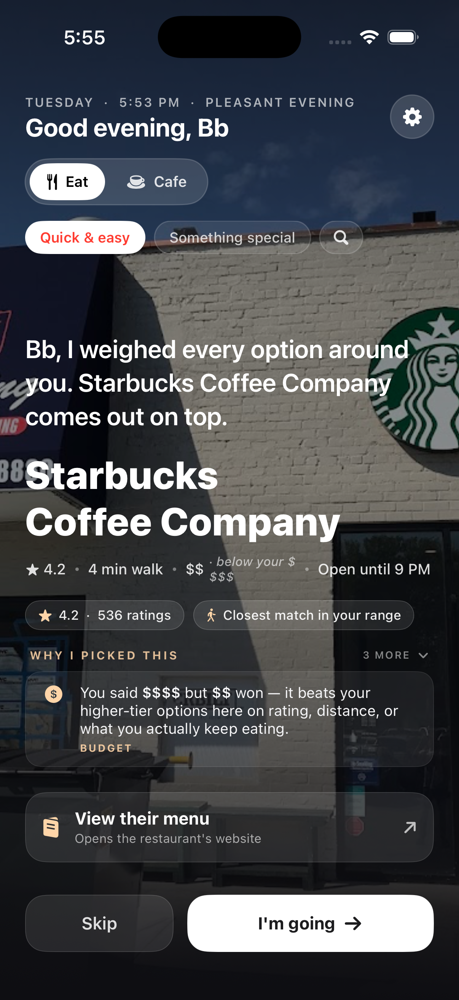
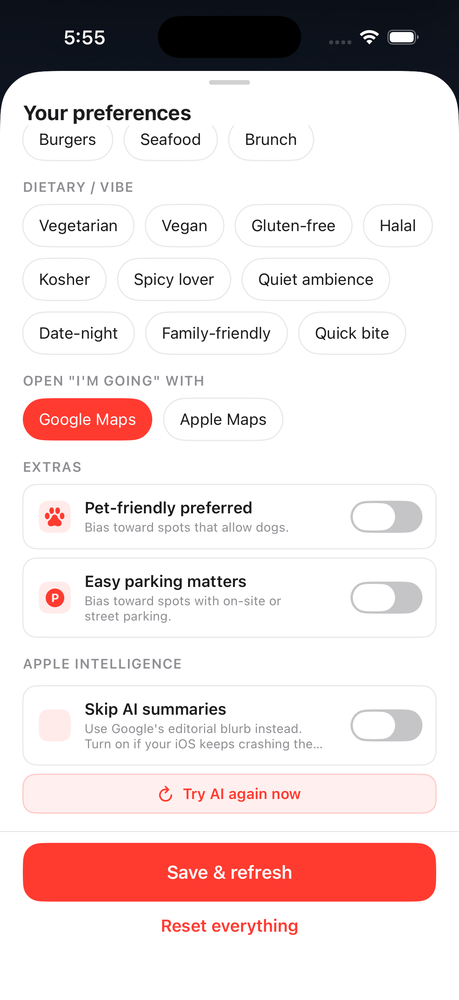
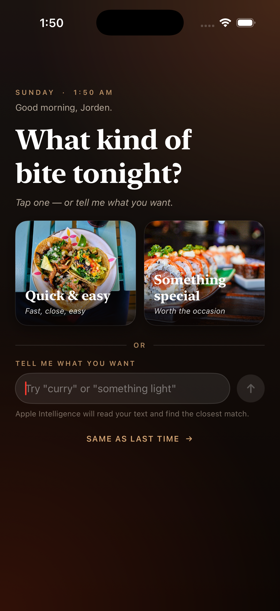

Every TestFlight build is paired to a specific tester observation.
Iteration is the proof that the product is being validated by real people, not assumed from the inside. Each release below pairs an actual quote from a TestFlight tester with the design / engineering response that shipped in answer. The point isn't speed — it's that the loop is closed: feedback in, fix out, ship, repeat. Nothing reverse-engineered for the case study.
openNow; keep unknown hours in the pool but bias them lower. Pool got smaller, pool got more honest. Three days later this got smarter: Stage 2 computes "open now" locally from the cached weekly schedule.
$$ badge, a "Still your top pick" confirmation chip when re-ranking legitimately picks the same place, and a -25 recently-presented penalty so cold relaunches don't always land on yesterday's pick.
markdownSafe extension, balance-check ** / _ counts at the AttributedString.markdown() entry, and sanitize AI-generated reasons before they reach the parser. Same crash had recurred — this stop-shipped it.
restaurant excluded by excludedPrimaryTypes only so cafes carrying "restaurant" as a SECONDARY tag still pass), a separate cafeScore branch (review count proxies capacity, dineIn confirms real seating, editorialSummary scanned for "quiet / cozy / intimate", price tier inverted so $-$$ wins), a separate cache pool, and DISTANCE ranking instead of POPULARITY — so the local independent beats Magnolia Bakery 30 minutes away. Mood and dish intent are disabled in Cafe context: they describe meals, not work spots.
restaurants = [] before the new fetch can race. No pool leakage between modes; failures now produce a true empty state with a clear "set your city" CTA, not fake picks dressed up as real ones.
minutesUntilClose() to the Restaurant model — runway computed locally from regularHours + device clock, no extra API call. Recommender now penalizes <30 min runway by -40 (effectively buries it), 30–60 by -22, 60–120 by -8 — in both Eat and Cafe modes. Pick card swaps the generic "Open now" for a concrete "Open until 11 PM", and when runway drops under an hour a red "Closing in 35 min" pill renders right under the meta row with a clock-with-exclamation glyph. Same data drives the score and the warning; no chance of disagreement.
(rating == 0 && reviewCount == 0) combo is now a hard reject at the provider layer. Plus a defensive distance gate that drops any computed result beyond 1.5× the requested search radius regardless of name or quality — Google occasionally ships places with miscoded lat/lng that pass the API's own radius check.
这个icon 现在怎么有两个缺口?
食物也有缺口?
Bitez' to use your location?" The submission-day catch. The
CFBundleDisplayName key in Info.plist had been silently corrupted — chat-debug content from an earlier session had embedded itself into the production app name. iOS injects that string verbatim into the system permission popup. Caught in real-device testing the day before App Store submission would have shipped — a guaranteed Apple review rejection. Fixed both Debug and Release configurations and replaced the location-permission description with the proper brand copy. Confidence in real-device dogfooding restored.
resolveCityToCoordinates method called by both surfaces. Three-layer geocode: raw input → 5-digit ZIP gets a ", USA" suffix (CLGeocoder's well-known blind spot) → 1.1-second pause + retry to recover from rate-limit throttling. Process-cache so repeated lookups of the same text never hit Apple. Plus a stricter rule on top: both surfaces now require the city field to contain at least one letter — pure-digit ZIPs are rejected at validation with an inline "Type Bayside instead of 11364" hint. Stops the failure before it can happen.
"terrible", "avoid", "would not recommend" ...) is scanned at every layer so the "what reviewers love" promise on the card title can't be falsified by a 1-star rant slipping through.
cafe, coffee_shop, and tea_house to dining mode's excludedPrimaryTypes — Google never returns a coffee-shop primary place when the user picked Eat, so the Starbucks-as-dinner case is structurally impossible. The reverse already excludes restaurant/bar/fast-food primaries from cafe mode. Bakery stays in Eat (Levain, Tartine, etc. are real food destinations). The two contexts are now truly disjoint pools — not just differently-scored views of the same pool.
UISceneSession.Role raw-string match, no CarPlay entitlement needed), AVAudioSession current route containing bluetoothA2DP / bluetoothHFP / carAudio, and CMMotionActivityManager reporting automotive at non-low confidence. Any one fires, the entire PickView swaps for DrivingPickView: pure-black background, 54pt restaurant name, 140pt Skip / I'm going buttons, friend line as the deterministic template (AI's 25-second timeout doesn't fit a stoplight). Auto-narrate via AVSpeechSynthesizer with .duckOthers + voicePrompt mode plays the friend line over CarPlay audio. Voice input via SFSpeechRecognizer (on-device when available) — tap mic, say "ramen", get a fresh pick. Settings → Diagnostics has a sticky Force driving view toggle for demoing without an actual car. False positives (Bluetooth headphones on a walk) get a "Use normal view" pill in the top-right.
VNClassifyImageRequest on-device: 60+ food-related identifier tokens (food, dish, pizza, ramen, salad, burger, ...) compute a max food confidence; anti-tokens (storefront, facade, sign, person, building) above 0.5 zero it out. Photos sort food-first so the burger photo floats above the storefront, but storefronts stay visible — the user wanted to "see the place," not just the food. Zero network round-trips for classification, zero permission prompts, ~25–80ms per image on A15+. The original website still lives as "View their store" at the bottom of the sheet — one tap further, no longer the front door.
Button + .disabled implementation that dimmed the whole card and looked broken on the very places that didn't need a toggle.
places-api.foursquare.com host, added Bearer-prefixed auth + the required X-Places-Api-Version date header, modeled the per-pick enrichment (foursquareNoiseLevel / foursquareHasWifi / foursquareTips / foursquareVerified), wired it into cafeScore as the strongest noise signal (quiet → +24, very_loud → −28), and shipped the blue-accented review-source card.
Why I deleted it. Foursquare's free tier returned 429 "no API credits remaining" on every app request — but a curl test from the same machine, same key, same minute returned 200 with 179,960 monthly requests still on the counter. The diff between the two requests was the
fields= parameter: attributes and tips — the exact two fields I was integrating Foursquare to get — are categorized as Premium Data and require per-call paid credits even when free-tier quota is untouched. Without those fields, the integration provided exactly one usable signal: the verified boolean. One boolean is not worth a per-pick HTTP round-trip, the 429 log noise, the extra cache-invalidation surface, the schema risk on the Restaurant model. Two options: pay for Premium credits to keep the original value proposition, or accept that the free-tier reduction made the integration a net loss. I chose the second one. Deleted enricher, the AppCoordinator hook, the four Restaurant fields, the Recommender wiring, the blue tip card. Cache version bumped v17 → v18 so the on-disk shape matches in-memory. Left a stub file with this rationale so a future me doesn't try the same experiment twice.
What's documented here is the deletion, not the build. Shipping a feature and removing it once the economics break is a separate discipline from never building it.
libswiftCore on a background queue inside FoundationModels.
FoundationModels turned off until iOS 26.6. Hard-killed both narrate() (friend-line + reasoning rewrite) and the AI fallback inside parseDishIntent. Every escalation of input sanitization across the last weeks — asciiOnly, markdownBalanced, escape-all-markdown, AttributedString parser short-circuit — bought roughly a week of stability before a new edge case landed in the tokenizer. The trap is a Swift precondition inside Apple's framework, on a background queue, untouchable by try? and unreachable from our code. Friendlier and more honest to route around: ReasoningEngine's deterministic friend-line templates and the 80+ entry keyword-dictionary dish parser cover the same UX surface (warmer copy lost, never crashes). Re-enable is two return nil deletions when iOS 26.6+ ships a tokenizer fix. The honest story is choosing reliability over a marginally-warmer sentence — the same kind of trade-off as build 25's delete.

Enter passwordThe Eat / Cafe boundary was a scoring suggestion, not a structural rule.
Picture left: Eat mode, $$$$ budget, recommender picks Starbucks Coffee Company. Even with the "below your $" honesty fact rendered, this is a category miss — the user asked for dinner. The cafe pool and the dining pool used to share a Google search and differ only in scoring weights. Build 19 split them at the API layer: cafe primaries are excluded from Eat fetches, restaurant primaries are excluded from Cafe fetches, and the two contexts become truly disjoint pools.
"Closest match in your range" pill on the card was correct — Starbucks really was the closest 4-min-walk venue. The bug was the pool, not the scorer.

Enter passwordReading this top-to-bottom is the design discipline: every fix paid down a specific human moment. Not a sprint plan, not a roadmap — feedback in, fix out, ship.

Enter passwordThe mood gate went from a 4-card menu to a 2-card + free-text input.
Day-zero hypothesis: pick a mood, get a place. Day-ten reality: testers wanted to say what they wanted. Removing "I'm hungry" and "Comfort food" cut the mood taxonomy in half; adding the free-text input gave the LLM its first job (PARSE) and let users phrase real cravings — "ramyon", "fish that doesn't smell", "curry-something hearty".
The "Try 'curry' or 'something spicy'" placeholder is a hint and a contract: speak normally, the app understands. Apple Foundation Models parses, the keyword dictionary is the safety net.
 Enter password
Enter password